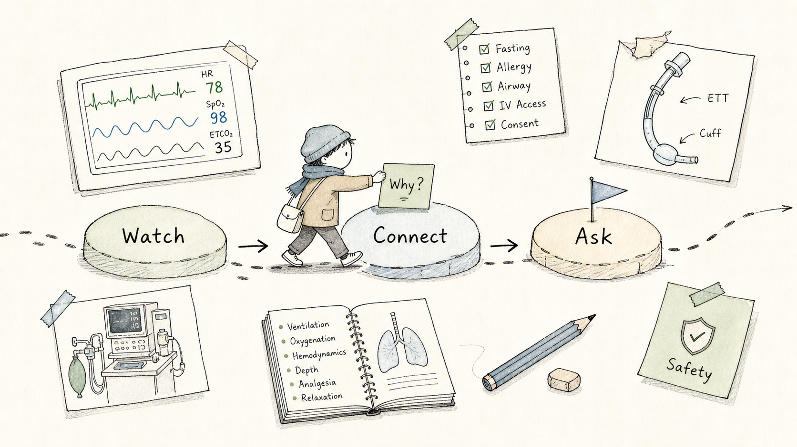
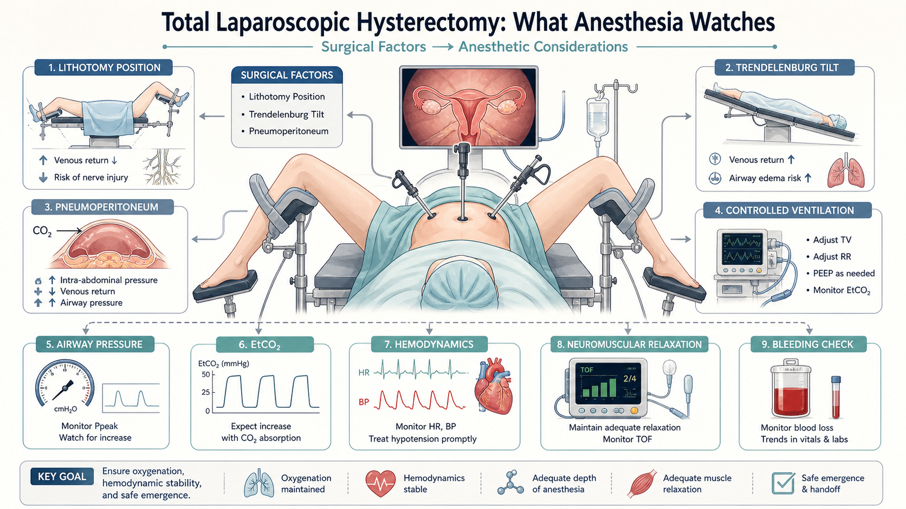
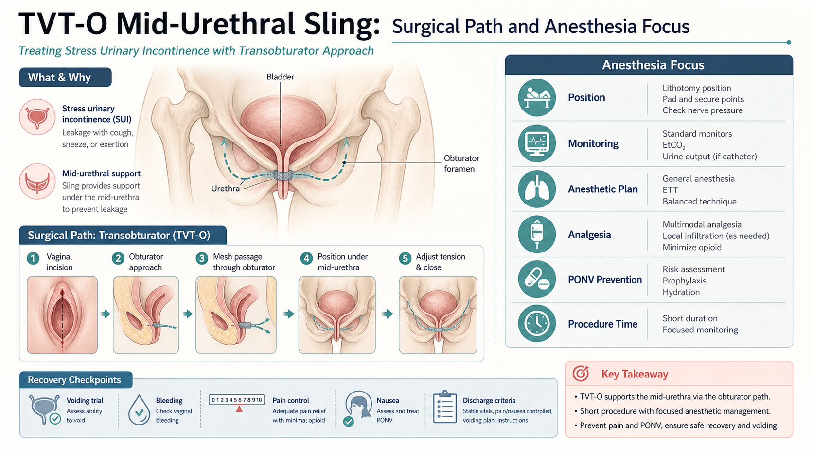
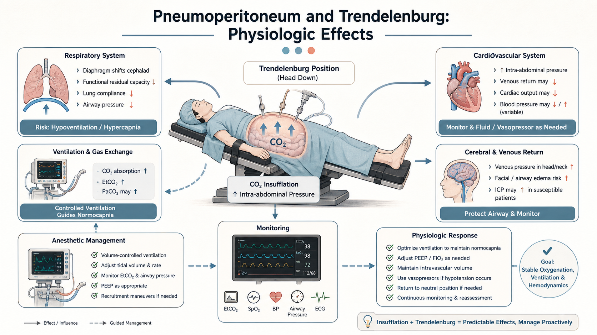
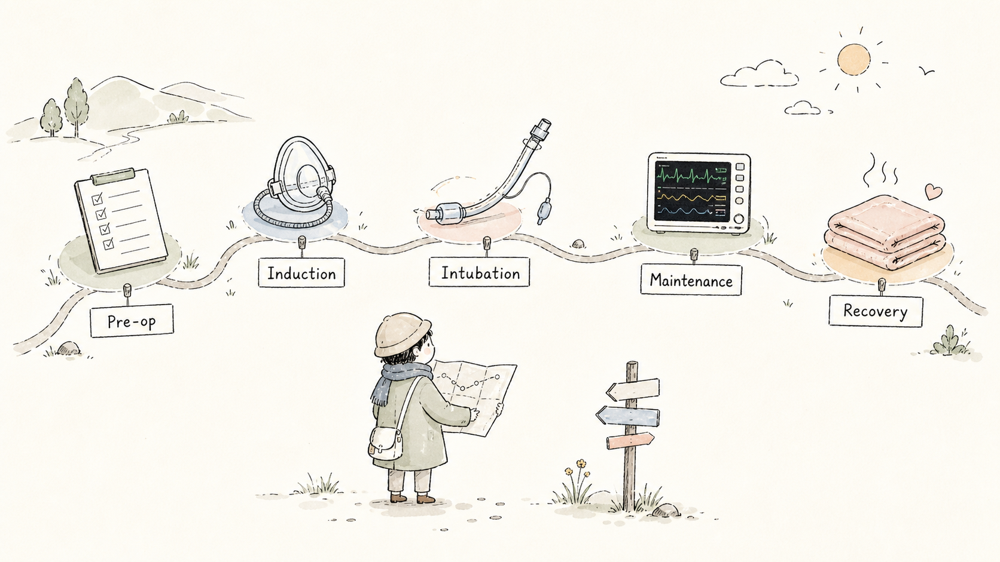
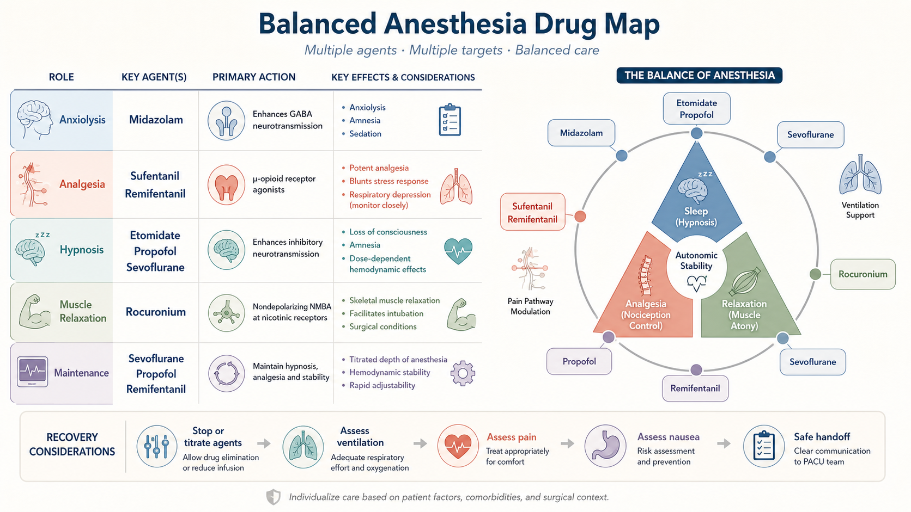
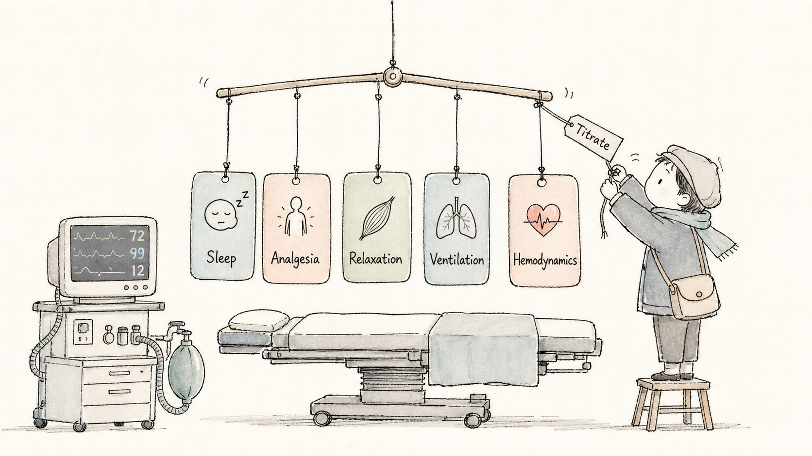
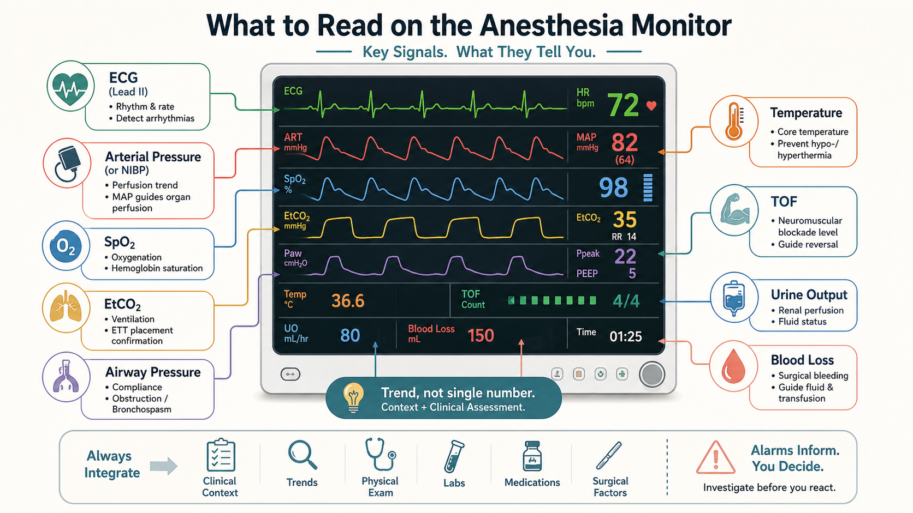
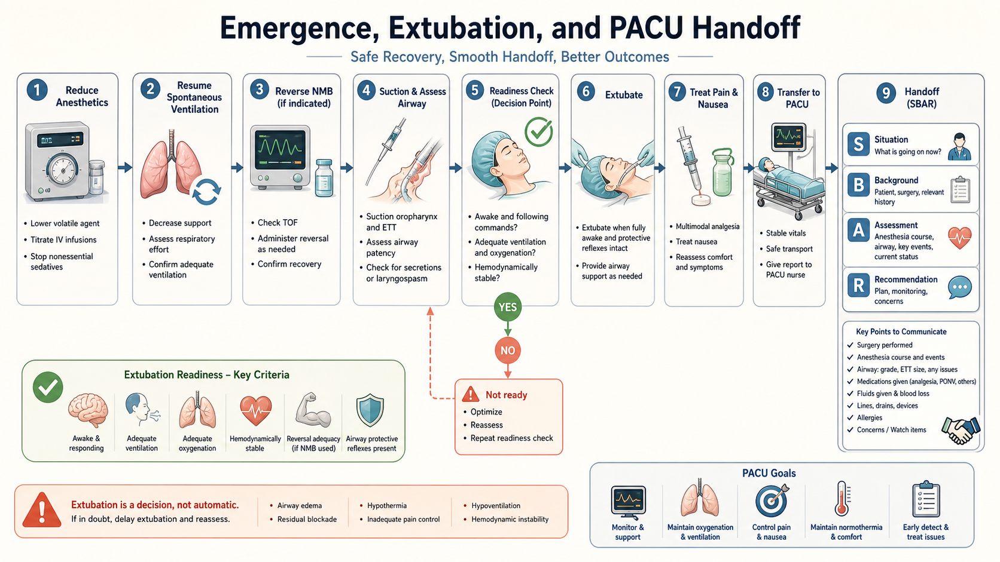
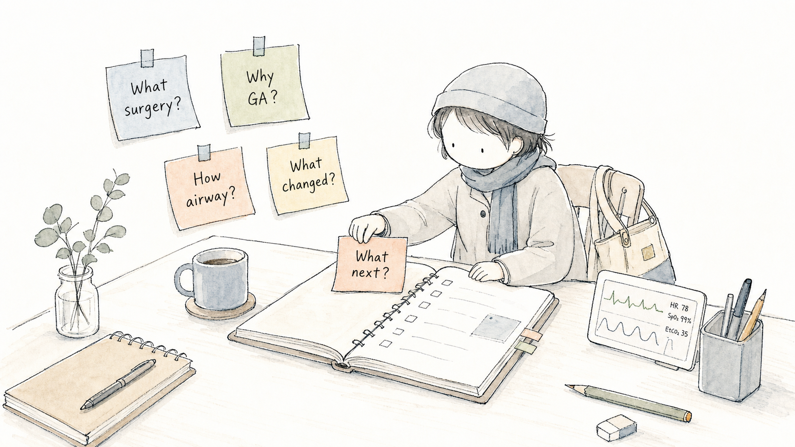

Case Map
今日病例：把“看手术”变成“看麻醉逻辑”Today's Cases: Turn Observation into Anesthesia Reasoning
学习目标Learning goals
这套课件适合术前 15 分钟预习、术中间隙快速回看、术后 10 分钟复盘。学生只需要抓住三个问题：手术给病人带来什么刺激？麻醉如何保护病人？监测变化提示我们做什么？
This course is designed for a 15-minute pre-op briefing, quick intra-op review, and a 10-minute post-case debrief. The student should keep three questions in mind: What does the surgery do to the patient? How does anesthesia protect the patient? What do monitor changes ask us to do?

Surgery First
先理解手术：麻醉不是孤立发生的Surgery First: Anesthesia Does Not Happen in Isolation
腹腔镜全子宫切除Total laparoscopic hysterectomy
腹腔镜全子宫切除通常需要气腹、头低位、截石位和充分肌松。麻醉关注点包括通气、二氧化碳排出、气道压力、循环变化、体位相关风险和术中出血。
Total laparoscopic hysterectomy commonly involves pneumoperitoneum, Trendelenburg, lithotomy positioning, and adequate neuromuscular relaxation. Anesthesia attention centers on ventilation, carbon dioxide elimination, airway pressure, hemodynamics, positioning risk, and bleeding.

TVT-O
TVT-O 是治疗压力性尿失禁的中段尿道悬吊手术。对学生来说，重点是理解它比腹腔镜手术更短、更局部，但仍需要严密监测、舒适苏醒、疼痛和恶心呕吐管理，以及术后排尿相关观察。
TVT-O is a mid-urethral sling procedure for stress urinary incontinence. For a beginner, it is useful to see that it is shorter and more localized than laparoscopic surgery, yet still requires careful monitoring, smooth emergence, pain and PONV management, and post-op voiding-related observation.

Why General Anesthesia
为什么常用全身麻醉气管插管Why General Anesthesia with Endotracheal Intubation
腹腔镜妇科手术会改变呼吸力学：气腹升高腹内压，头低位使膈肌上移，肺顺应性下降，气道压力和 EtCO2 可能变化。气管插管帮助麻醉医生稳定控制通气、氧合和二氧化碳排出。
Laparoscopic gynecologic surgery changes respiratory mechanics: pneumoperitoneum increases intra-abdominal pressure, Trendelenburg shifts the diaphragm cephalad, lung compliance may fall, and airway pressure and EtCO2 may change. Endotracheal intubation helps the anesthesiologist control ventilation, oxygenation, and carbon dioxide elimination.

Full Anesthesia Workflow
从术前评估到 PACU：一条连续照护链From Pre-op to PACU: One Continuous Care Chain
给初学者讲麻醉流程时，最重要的是避免把动作拆成孤立片段。监测、诱导、插管、维持、苏醒和交接都服务于同一个目标：让病人在手术刺激中保持安全、稳定和可恢复。
When teaching a beginner, avoid presenting anesthesia as isolated tasks. Monitoring, induction, intubation, maintenance, emergence, and handoff all serve one goal: keeping the patient safe, stable, and recoverable during surgical stress.


Drug Logic
用药逻辑：不是药名清单，而是平衡系统Drug Logic: Not a List, but a Balance System
你的常用药物可以按角色来讲：咪达唑仑用于缓解焦虑和遗忘，舒芬太尼和瑞芬太尼服务于镇痛和抑制应激，依托咪酯、丙泊酚、七氟醚服务于催眠和维持，罗库溴铵用于肌松。学生先理解“为什么用”，再慢慢学习“怎么滴定”。
The medications can be taught by role: midazolam for anxiolysis and amnesia, sufentanil and remifentanil for analgesia and stress-response control, etomidate, propofol, and sevoflurane for hypnosis and maintenance, and rocuronium for neuromuscular relaxation. A beginner should first understand why they are used before learning how they are titrated.


Monitoring
术中看什么：趋势比单个数字更重要What to Watch: Trends Matter More Than Single Numbers
让学生从监护仪开始学麻醉很有效。心电、血压、SpO2、EtCO2、气道压力、体温、肌松监测、尿量和出血量不是孤立数字，而是手术刺激、麻醉深度、通气和循环状态的共同反馈。
The monitor is a strong teaching entry point. ECG, blood pressure, SpO2, EtCO2, airway pressure, temperature, TOF, urine output, and blood loss are not isolated numbers. Together they reflect surgical stimulation, anesthetic depth, ventilation, and circulation.

Emergence and Handoff
苏醒不是结束，是安全转运的开始Emergence Is Not the End, but the Start of Safe Transfer
苏醒阶段要看呼吸恢复、肌松恢复、意识水平、气道保护、疼痛、恶心呕吐、体温和出血风险。拔管不是一个动作，而是多个条件同时满足后的结果。
During emergence, assess return of ventilation, neuromuscular recovery, consciousness, airway protection, pain, nausea and vomiting, temperature, and bleeding risk. Extubation is not a single action; it is the result of multiple conditions being met.

Observer Mode
学生现场观摩清单Student Observation Checklist
Debrief
术后 5 个问题：把经验留下来Five Post-Case Questions: Capture the Learning
每台手术后可以让学生用 2 分钟回答五个问题：这是什么手术？为什么适合全麻插管？气道管理最关键的证据是什么？术中哪一个指标变化最值得注意？下一台手术我要主动观察什么？
After each case, ask the student to answer five questions in two minutes: What surgery was this? Why did general anesthesia with ETT make sense? What evidence confirmed airway management? Which intra-op change mattered most? What should I actively watch in the next case?
